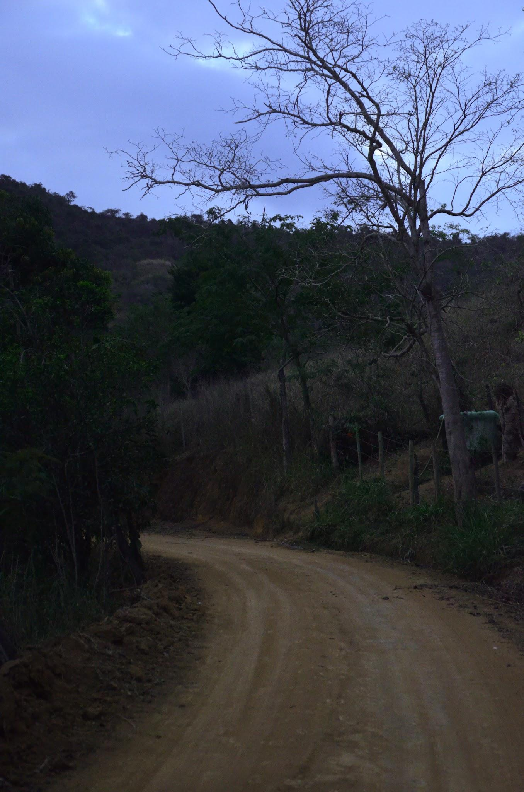
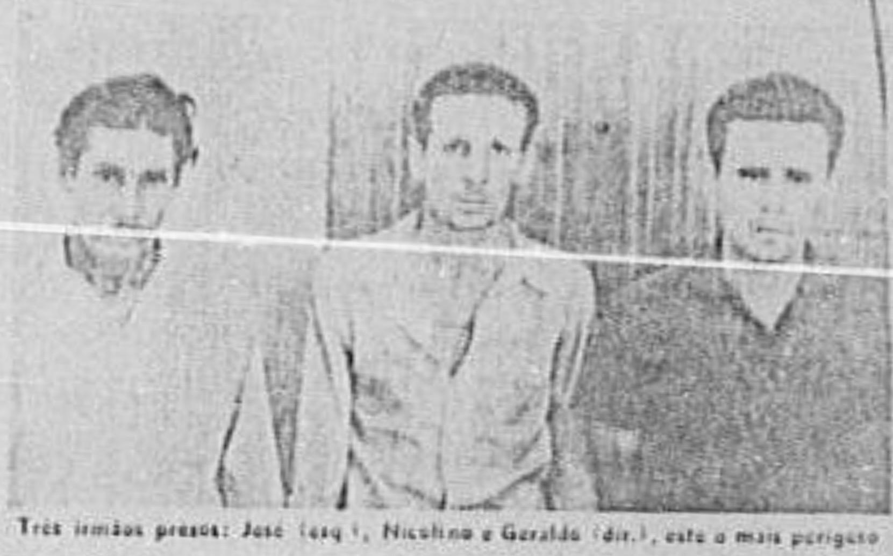
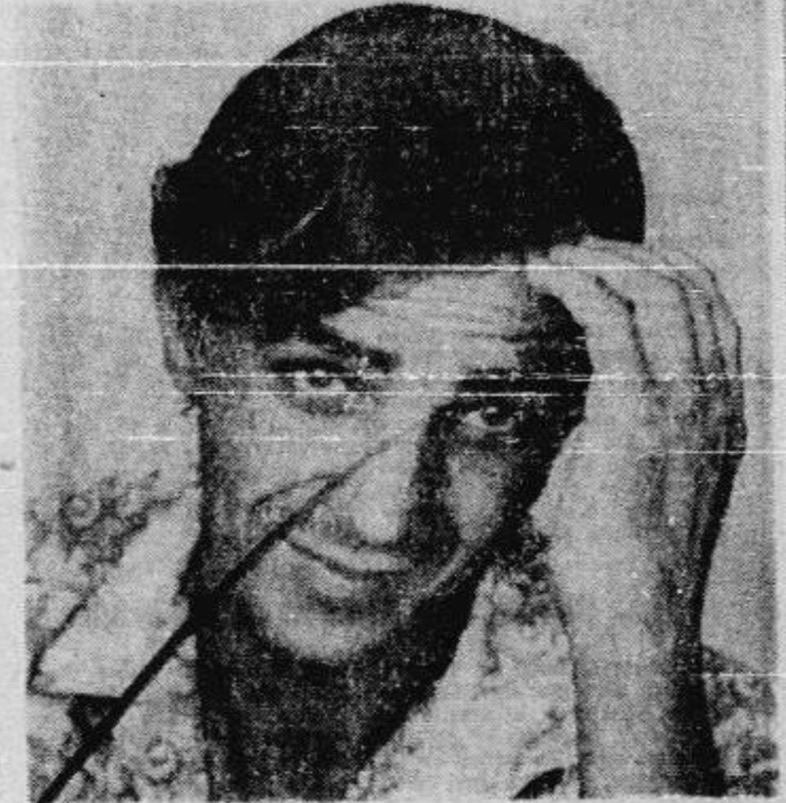
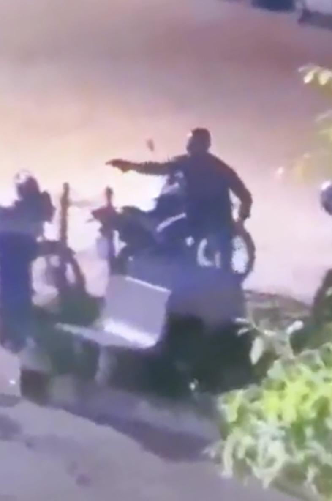

Sangue, Ferro e Silêncio
Moradores se acostumam a viver com o medo que, há pelo menos 50 anos, toma a cidade de Mutum
Leandro Alves24 de novembro de 2026

Cena 1 - As mortes:
5 de novembro de 2025
Na têmpora direita, um buraco de bala. Ela tinha apenas 18 anos. O sangue escorria da testa, se dividia na “foz em delta” formada pelo nariz e manchava todo o rosto. Na boca, o líquido, já seco, formava um sorriso sem graça. Da nuca escorria outra parte do sangue que, por teimosia, serpenteava pela terra até formar uma pequena poça. O líquido de tom bordô umedecia o solo e alcançava as raízes de um sentimento que será extensamente abordado nesta reportagem: o medo.
Dentro de casa, ainda com os olhos abertos como quem registra seu último momento, o dono da propriedade está inerte no chão. Sessenta anos tinha o senhor. Na barba branca havia uma mancha de sangue, do lado esquerdo. O restante do rosto estava limpo. Porém, sob a nuca surgia um extenso sangramento, que tomava o chão ao seu redor. Não bastasse, durante o exame pericial, a Polícia Civil encontrou mais um corpo nos arredores da casa. A mulher, que tinha cerca de 32 anos, também foi desvivida. Pelo o que tudo indica, era amiga da jovem baleada na cabeça. Ao todo, 15 cápsulas de uma pistola 9mm foram encontradas
“Foi no Córrego Ponte Alta, na zona rural daqui de Mutum”, perguntei todo animado, tentando confirmar a informação com as fontes. Quanto terminei de dizer, pude captar o medo e a desconfiança que pairavam ali no ar. Mas, se bem que não te contei como cheguei até ali, né?
Cena 2 - As fontes
Desembarquei no Terminal Rodoviário de Mutum, no Vale do Rio Doce, em 15 de agosto de 2026. Logo logo saí dali, na tentativa de dar uma rápida volta pela praça Benedito Valadares. Ela estava em reforma, então não foi nada lá muito emocionante. Ao menos foi possível tirar algumas fotos do lugar, que estava vazio. Eram mais ou menos 6h10, então talvez esse seja o motivo.
Depois de uma ou outra fotografia, parei um táxi e dei o endereço de onde iria. Era uma casa próxima ao distrito de Centenário, na zona rural do município. Em coisa de cinco minutos entramos na estrada de terra e seguimos para o lugar. Por conta de algumas pedrinhas, o carro sambava de um lado pro outro, como se estivesse se apresentando em alguma escola de samba na Marquês de Sapucaí.
Bem, agora já estamos situados, não é mesmo? Voltemos às fontes. Animado até agora a pouco, Rogério Cunha* (nome modificado por segurança), de 51 anos, mudou o rosto. Ele até tentou disfarçar o desconforto, buscou mudar de assunto, mas não teve muito jeito. “É rapaz, pra aqueles lados de Ponte Alta o negócio é perigoso mesmo. Depois do tráfico então, piorou demais. Pistoleiro tá achando emprego”, disse ele meio desenxabido. Conforme Cunha, a coisa toda passa a esquentar no distrito de Roseiral, perto da divisa com o Espírito Santo.
Motorista de uma empresa de laticínio, o homem está acostumado a rodar por aquelas bandas. Mas deixa claro, de noite não tem jeito. “É cair a luz e o povo começa a trabalhar. Eu não paro pra ajudar ninguém de noite”, comenta. O medo de uma possível emboscada não vem só dele, mas é compartilhado por pelo menos 30 funcionários. Segundo Cunha, o negócio é tentar prevenir e seguir a vida. O tempo ao lado da família e junto da plantação de café - cerca de 700 pés do tipo conilon e 300 do arábica - ajudava a espairecer e aliviar a tensão.

O plano, inclusive, é esse. Cuidar dos pés de café, plantar um bocado de mandioca, dar o “de comer” às poucas cabeças de gado que ali estão e passar longe de encrenca. Talvez você, caro leitor, acostumado com aquele vai e vem interminável das metrópoles, esteja tão distante desta realidade que não pare para pensar nos conhecimentos do interior. São as sabedorias da terra e dos rios que ainda mantém viva - mesmo que respirando por aparelhos - a natureza deste país. Mas isso é um assunto para outra reportagem.
Cena 3 - A pistolagem
Não foi só o homem quem ficou desconfortável. Seus pais também. Com 81 anos de idade, Robert Freitas* tinha a animação e o humor de um jovem no alto dos seus vinte e poucos. Quando me viu perguntar sobre a morte do ex-prefeito Gentil Simões Caldeira, em 1972, Freitas fingiu que não era com ele. Deu uma encarada no copo de café, pegou mais um pedaço da broa de arroz e foi “rebolar” o queixo.
Quem começou a contar a história foi a esposa, Rebecca Freitas*, de 83. Era 4 de setembro de 1972. Ela chegava de viagem, após ter ido visitar alguns parentes no Espírito Santo. O ônibus, porém, foi parado por alguns policiais logo na entrada da cidade. “Eles queriam achar armas com o povo, mas eu tava carregando só o meu menino no colo. Ele tava com 9 meses, mas quem disse que eles acreditaram. ‘Destampa esse negócio aí que eu quero ver o que que é’, um deles falou comigo”.
Eram homens do Departamento de Ordem Política e Social (Dops). Cerca de 100 agentes haviam desembarcado na cidade, acompanhados de policiais civis e militares. O planejamento era fazer uma operação de “caça aos pistoleiros”, além de uma larga apreensão de armas. Segundo ela, truculência e falta de paciência eram marcas registradas daqueles homens enviados pelo Estado. “Eles ainda reviraram a minha bolsa para ver se tinha alguma coisa ali dentro. Depois de não encontrarem nada, me mandaram sair do ônibus e seguir a pé para a casa”, relata Rebecca.
“Aqui na época já era cheio de pistoleiro. Direto a gente ouvia falar do Nicolino e do Alô (Geraldo Lamarca)”, disse Robert Freitas, como quem tivesse perdido o medo. De fato, o sobrenome Lamarca dominava o local. Geraldo, José e Nicolino eram pistoleiros conhecidos da região. Eles aceitavam aquelas empreitadas em que seriam bem remunerados, não interessava quem tivessem de “apagar”.

O trio, e o medo gerado por ele, ganharam fama nacional, estampando as capas de diversos jornais do país. Na época, crianças deixaram de brincar e de ir às escolas. Até mesmo os pais tinham receio de sair às ruas e, por uma nefasta ironia do destino, acabarem mortos. “Tempos atrás nós íamos a festas, agora nós vamos a enterros”, disse a estudante Marlene Machado ao Jornal do Brasil, na época da investigação.
Após quatro dias de operação das forças de segurança em Mutum, os irmãos se juntaram a outros 26 pistoleiros presos. Com eles, mais de 800 armas, entre carabinas, pistolas e facas, foram apreendidas. Mesmo com as suspeitas de vários, nenhum dos Lamarca matou Gentil Simões.
Cena 4 - Desejo de sangue
Ainda estamos em 1972. O pistoleiro Vantuil Gonçalves confessou ter assassinado o ex-prefeito em troca de alguns Cruzeiros. Com o cabelo “lambido”e uma franja que cai sobre a testa, o criminoso manteve o sorriso na maioria das fotos que lhe foram tiradas. Em apenas uma ele aparece com semblante fechado, enquanto dava depoimento à Polícia Civil.

“Eu tinha apenas 13 anos quando vovô matou papai. Procurei esquecer, trabalhando de sol a sol. Depois, num baile, matei um que precisava morrer. Os outros vieram naturalmente, com o tempo”, declarou Gonçalves na época. A violência o rodeava desde a infância, como se ditasse o caminho que seria trilhado ao longo da vida. Conforme o homem, quando alguém o contratava, ele até tentava pensar em outra coisa. O crime, porém, não lhe saía da mente, até que então o executava.
Pela morte de Gentil recebeu apenas a metade dos 3 mil Cruzeiros acertados com os mandantes Danilo Eutrópio e Valdemar José de Oliveira, também conhecido Valdemar “Beijo”.
Antes de ser pego, o pistoleiro juntou a grana e viajou ao Rio de Janeiro. Na cidade maravilhosa, Gonçalves foi à algumas festas, comprou roupas e se registrou como Valter de Oliveira no cartório. Aproveitou que estava por lá e tirou um título de eleitor com o novo nome.
É como diz o ditado: “novo nome, vida nova”, ou algo do gênero. Os velhos hábitos, todavia, não desaparecem tão rápido. Para tirar os documentos falsos, o pistoleiro pagou 150 Cruzeiros ao dono do cartório; saiu de lá e foi se abrigar em um barracão no Jacarezinho, onde foi pego.
Cena 5 - O ciclo
Desde lá, 54 anos já se passaram. A violência local, seja causada pela pistolagem ou pelo tráfico, não diminuiu. Na realidade, as raízes do medo tornaram-se cada vez mais profundas, num crescimento selvático e irrastreável. Entre janeiro e agosto de 2026, 6 homicídios foram confirmados na cidade de apenas 26 mil habitantes.
O número representa um aumento de 200% nas ocorrências em relação a 2025, quando 7 pessoas foram mortas, entre janeiro e dezembro. Os dados são do Observatório de Segurança Pública da Secretaria de Justiça e Segurança Pública de Minas Gerais (Sejusp).
No início de outubro, cerca de 2 meses após voltar para casa, recebo de uma fonte um vídeo pitoresco. Era uma troca de tiros entre dois homens, de 30 e 29 anos, que ocorria numa praça em São Francisco de Humaitá, distrito de Mutum. A cena parecia ter sido tirada de um daqueles filmes de “bangue-bangue”, onde dois personagens armados duelam até a morte. A motivação para a troca de tiros, ao que tudo indica, era a disputa por um isqueiro.

Em meio aos disparos, os dois acabaram se atingindo. Mesmo ferido, o suspeito foi para cima do “adversário”, que estava caído no chão, em uma tentativa de começar uma luta corporal. Durante a briga, um terceiro envolvido - que supostamente seria primo do agressor - pegou um revólver calibre .38 que estava caído no chão. Ele atirou diversas vezes contra a vítima. Depois parou, chutou o homem e fugiu do local.
Um morto, um hospitalizado, um foragido.